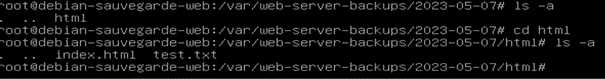
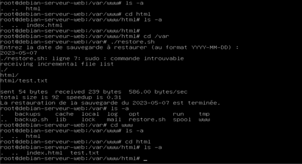
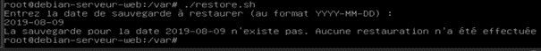

Projet Infra
Le projet consiste à mettre en place un système d'information (SI) pour une petite entreprise en utilisant des machines virtuelles (VMs) interconnectées via un switch ou wifi. L'architecture proposée comprend un pare-feu avec DHCP, DNS, filtrage réseau et routage, deux clients (1 Windows et 1 Linux), un serveur Linux pour la sauvegarde du site web et un autre serveur Linux pour l'hébergement du site web.
L'accès au serveur de sauvegarde se fera uniquement via le réseau interne de l'entreprise, tandis que l'accès au site web sera possible depuis le réseau internet ou externe.
Les livrables attendus incluent un rapport de projet faisant état des solutions techniques et transverses mises en œuvre, une documentation d'architecture détaillant la mise en œuvre des bonnes pratiques et les configurations nécessaires pour mettre en place la solution, ainsi qu'une documentation d'exploitation détaillant l'utilisation des outils et services mis en place et les procédures de sauvegarde et de restauration du site web.
L'évaluation du projet se fera à travers une évaluation intermédiaire, une présentation finale sous forme de démonstration pour l'ensemble du projet, ainsi que des livrables (documentation et code) pour chaque partie du projet. Le projet inclut également des bonus tels que la mise en place d'un certificat auto-signé ou signé et l'explication de celui-ci sur le site web.
I. Introduction
L'objectif de cette documentation est de présenter l'utilisation des outils et services mis en place dans le cadre du Projet Infra. Elle permettra aux utilisateurs et administrateurs de comprendre comment utiliser les différents outils et services du réseau.
II. Sauvegarde des ressources web
1. Procédure de sauvegarde
Pour les sauvegardes, nous avons décidé de nous tourner vers rsync car il y a beaucoup de ressource sur internet expliquant son utilisation.
Nous avons donc commencé en préparant les deux serveurs mon but sera de sauvegarder le dossier "var/www/"" du serveur web vers le dossier "var/web-server-backups/" sur le serveur de sauvegarde
nous avons par la suite pour être sûr d’éviter les problèmes de permissions faits du compte sauvegarde-web le propriétaire du dossier web-server-backups :
2. Emplacement de stockage des sauvegardes
Vient en suite le moment de tester la commande de sauvegarde:
"rsync --dry-run -avz /var/www/ sauvegarde-web192.168.159.129:/var/web-server-backups/"
qui se décompose en plusieurs parties :
- Tout d’abord, nous avons rsync qui est la commande pour la sauvegarde
- Nous utilisons ensuite –dry-run pour tester la commande, cet argument simulera le déplacement de fichier sans réellement l’effectuer
- Nous avons ensuite l'option -avz
- Nous choisissons ensuite le dossier que nous souhaitons sauvegarder «/var/www/»
- Puis enfin l’endroit où nous le sauvegardons :
o Sur l’utilisateur "sauvegarde-web"
o A l’adresse IP "192.168.159.129" (configuration réseau pas à jour)
o Dans le dossier "/var/web-server-backups/"
On nous demande ensuite si nous voulons établir la connexion
Puis le mot de passe du compte
Nous voyons donc que la commande fonctionne bien à noter que nous sommes en dry run et que les fichiers n’ont pas été transféré
Maintenant que nous voyons que la commande semble bonne, nous la testons réellement en enlevantla "--dry-run":
"rsync -avz /var/www/ sauvegarde-web192.168.159.129:/var/web-server-backups/"
Nous voyons donc que le transfert a bien été effectué sur la deuxième capture
Maintenant que nous voyons que notre transfert est fonctionnel, nous allons l’améliorer, on vide la sauvegarde en allant quand le dossier des sauvegardes et en utilisant la commande : "rm -rf *"
3. Methode de sauvegarde
Nous allons créer un script pour exécuter cette commande en automatique, pour ce faire, nous utilisons echo:
Nous modifions ensuite notre script :
Tout d’abord, nous précisons avec le # à pour but d’être exécuté sur le bash
4. Planification des sauvegardes
Puis nous créons la variable date qui utilise la commande date, nous renvoyons la date du jour
Nous modifions ensuite notre commande pour qu’elle crée la sauvegarde chaque jour dans un dossier ayant pour nom la date actuelle
Nous ajoutons ensuite des permissions d’exécutions à notre script avec la commande "chmod +x nackup.sh"
5. Vérification des sauvegardes
Nous allons maintenant tester notre script
Dossier de sauvegarde avant sauvegarde
Lancement de la sauvegarde
Dossier de sauvegarde après sauvegarde
Nous voyons donc que la sauvegarde a bien été effectué
6. Problèmes
Même si la sauvegarde fonctionne correctement, il y a encore 2 problèmes
- La commande nous demande à chaque fois le mot de passe
- La commande ne s’exécute pas automatiquement
Commençons par le mot de passe
Notre problème réside dans l’authentification ssh, il faut donc mettre en place un système d’authentification par clé
Nous commençons par générer une clé sur le serveur web avec la commande : "ssh-keygen -b 4096"

Nous générons la clé avec 4096 bits afin de respecter les bonnes pratiques et nous lui donnons une paraphrase sauvegarde
Maintenant nous copions l’Id du serveur avec la commande "ssh-copy-id sauvegarde-web@192.168.1.66"

Une fois faits, nous pouvons nous connecter directement à notre ssh sans mots de passe
7. Sauvegarde automatique
PAssons maintenant au deuxième problème
Pour la sauvegarde automatique, nous allons l’ajouter à la liste des programmes automatiques pour ce faire, nous tapons la commande "crontab -e"
puis nous ajoutons la ligne "0 12 * * * /bin/bash /var/backup.sh"
Cette ligne permet de lancer grâce au bash le script sauvegarde .sh tous les jours à 12h
III. Restauration à une date antérieure du site web
1. Selection sauvegarde
Pour la restauration de sauvegarde, on a utilisé un script bash qui demande à l’utilisateur d’entrer la date qu’il souhaite restaurer, j’ai donc créé le script en faisant la commande "nano restore.sh" dans le dossier "/var"

Dans ce script, nous commençons par préciser qu’il devra être exécuté avec le bash
2. Plannification de restauration
Puis nous demandons à l’utilisateur d’entrer une date, nous stockons cette date en variable
3. Restauration à partir de la sauvegarde
Si la date est correcte et qu’un dossier de sauvegarde existe, nous vidons le dossier du site web pour y mettre la sauvegarde, Sinon nous affichons un message d’erreur
Fichier de sauvegarde
Backup de cette sauvegarde
Exemple d’erreur d’appel
En conclusion, cette documentation d'exploitation permettra aux utilisateurs et administrateurs de comprendre comment utiliser les différents outils et services du réseau, ainsi que les procédures de sauvegarde et de restauration des ressources web. Elle est indispensable pour assurer la continuité des activités dans le cadre du Projet Infra.